Home / Community Partnerships
Community Partnerships
Bringing 100 seventh graders beyond the four walls of the classroom — five community organizations, real action projects, and a grade-wide forum.
Community Partners Program
At Tulsa Honor Academy as Grade Level Chair during the 2023-2024 school year, I sought opportunities for our 100 7th Graders to think beyond the four walls of the classroom and into the community they lived in, drawing from primary sources related to education, enviornment, and community restoration. Since we had advisory time each day, I started to devise a curriculum for all six advisory classes including problem identification, root cause analysis, and action-based planning, all while coordinating visitors from various organizations to deepen students' inquiries in the problems they were investigating. This was done in partnership with Tulsa Changemakers, a local non-profit primarily supporting afterschool programs in increasing student voice and impact projects. When working with the organization's executive director, we devised a pilot in-school version of this program. Making this program accessible during the school day with a 100-student participation disrupted the traditional afterschool model that would otherwise only support 8-10 students any given semester.
This partnership across the spring semester culminated in not only five community organizations visiting the campus, but also action projects afterwards and a grade-wide forum giving students a chance to share with other advisory students about what they learned from the process.
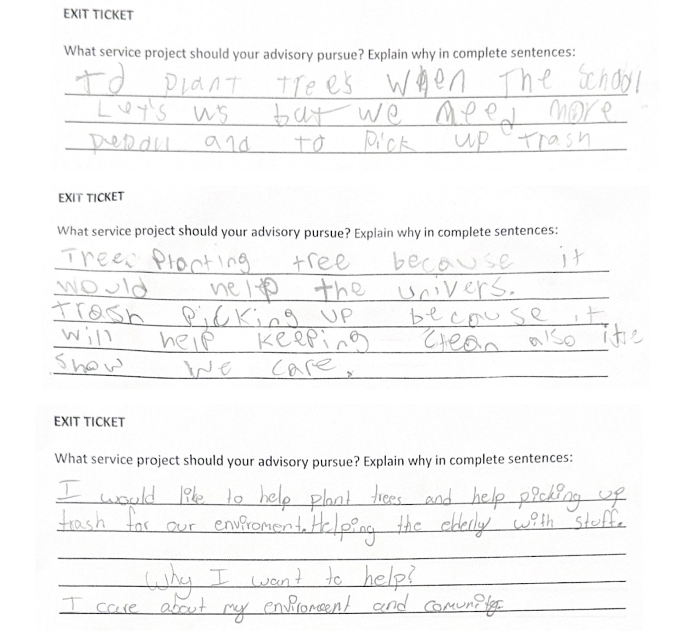
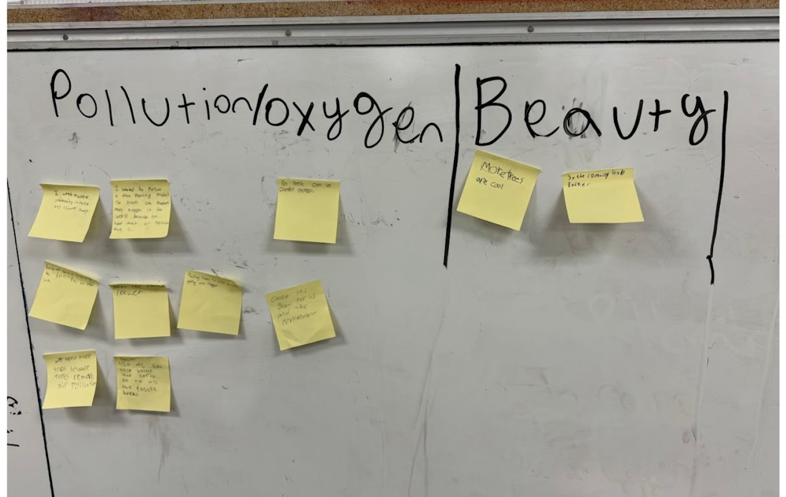
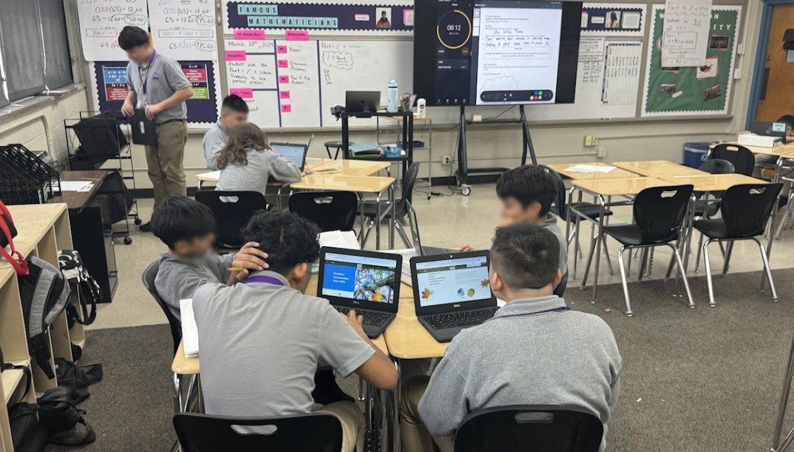
Students used primary sources regarding local parking space, enviornmental health, and their own personal interest to discuss issues to explore more in-depth. Once my advisory narrowed down their focus to environmental issues, they used more research to further narrow down to oxygen availability and, ultimately, decided to reach out to a local organization, Up With Trees. Students from other advisories had other interests, including working with the Tulsa Garden Center, Youth Services, Reading Partners, and Tulsa Parks and Recreation, all of whom sent a representative to talk to their respective advisories and inspire further action on March 29, 2024.
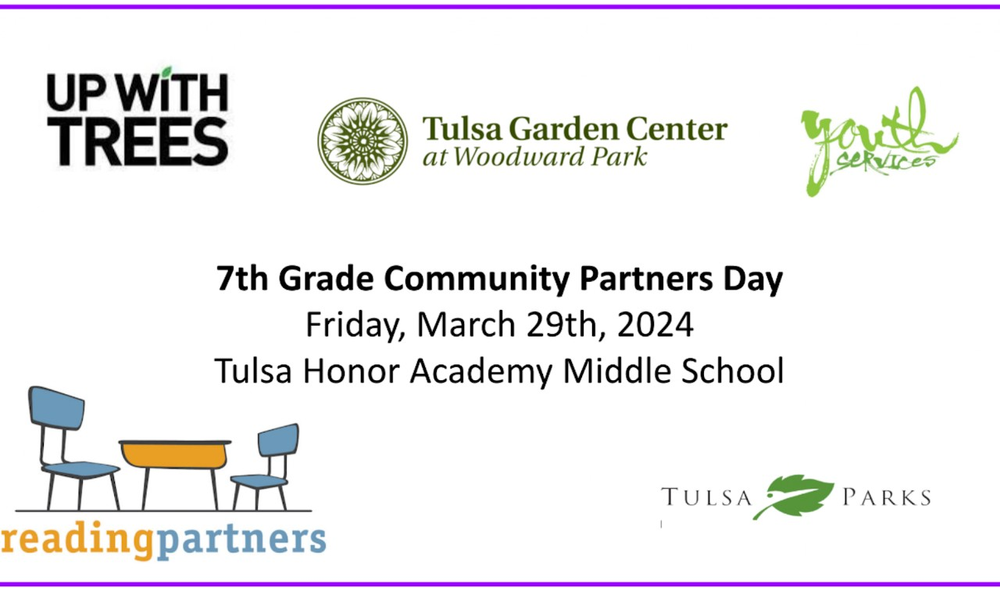
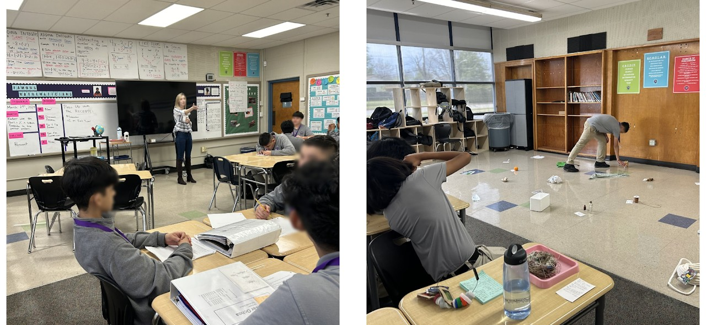
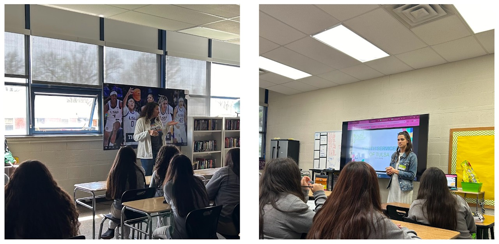
After advisories reflected and wrote about their community partner visit, they set a plan in place for how they would take action before the end of the school year. For my advisory class, this meant scheduling a day and time to help the organization plant trees in a North Tulsa neighborhood with little tree coverage.
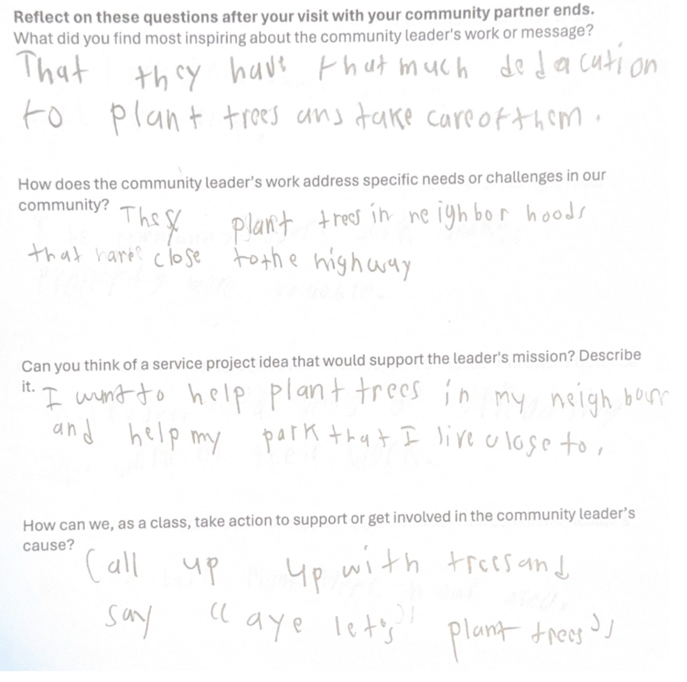
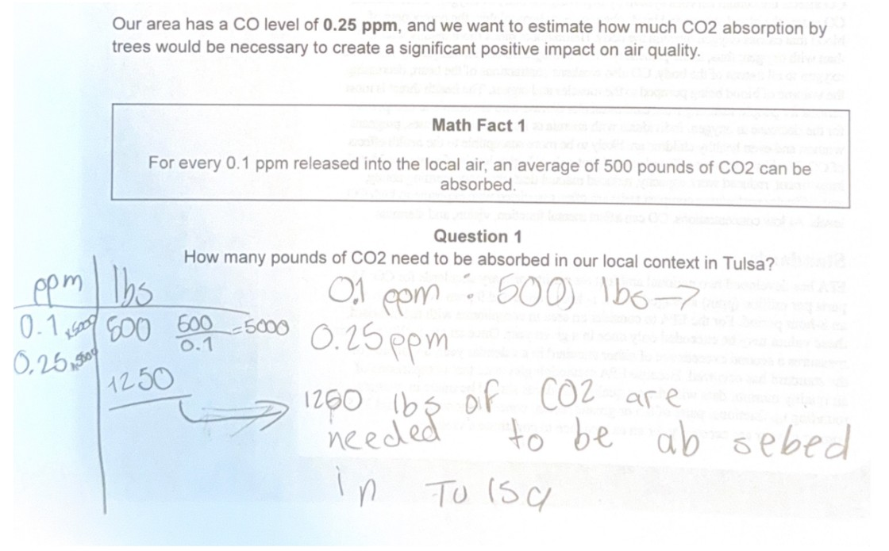
As pre-work leading up to the tree planting event, students connected a previously learned concept, unit rate, to the carbon dioxide absorption levels related to tree planing.
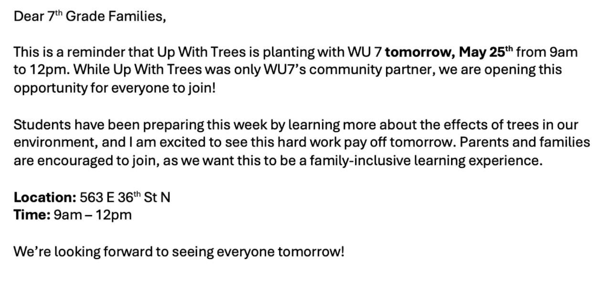
This was a parent email leading up to the event.
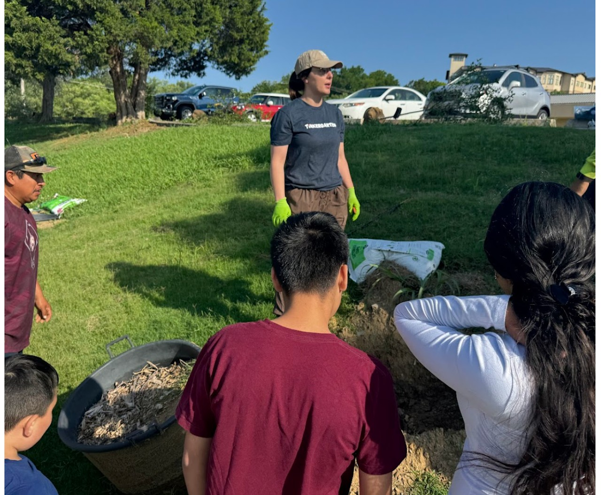
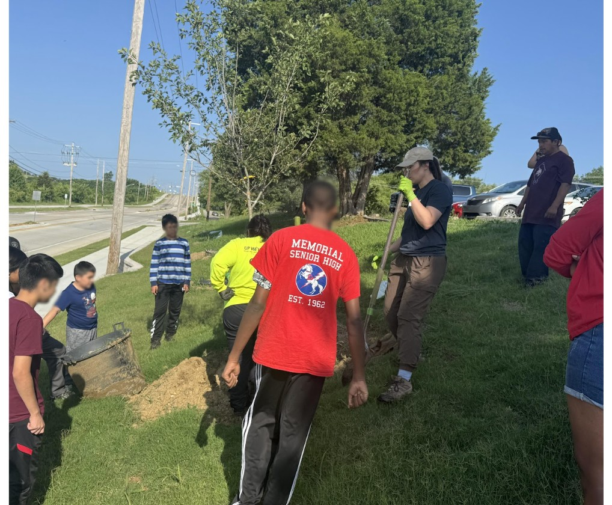
Pictures of students learning of the importance of trees and specifically how to plant them on May 25th, 2024
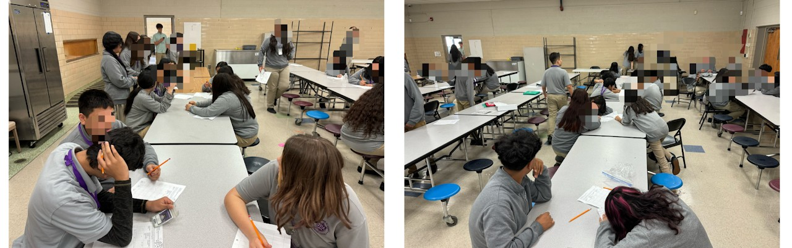
Students from all advisories met at the end of the school year to present on their community parnter projects and mingle to learn from other advisories. All students completed a reflection opportunity requiring discussions with multiple other students, with their work and reflections shown below.
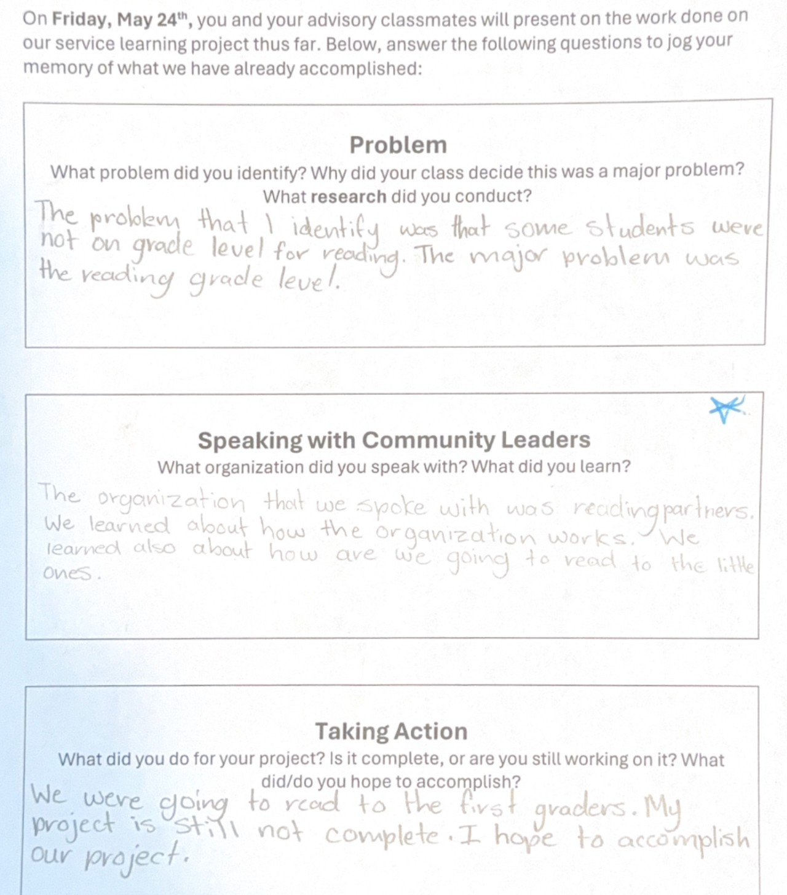
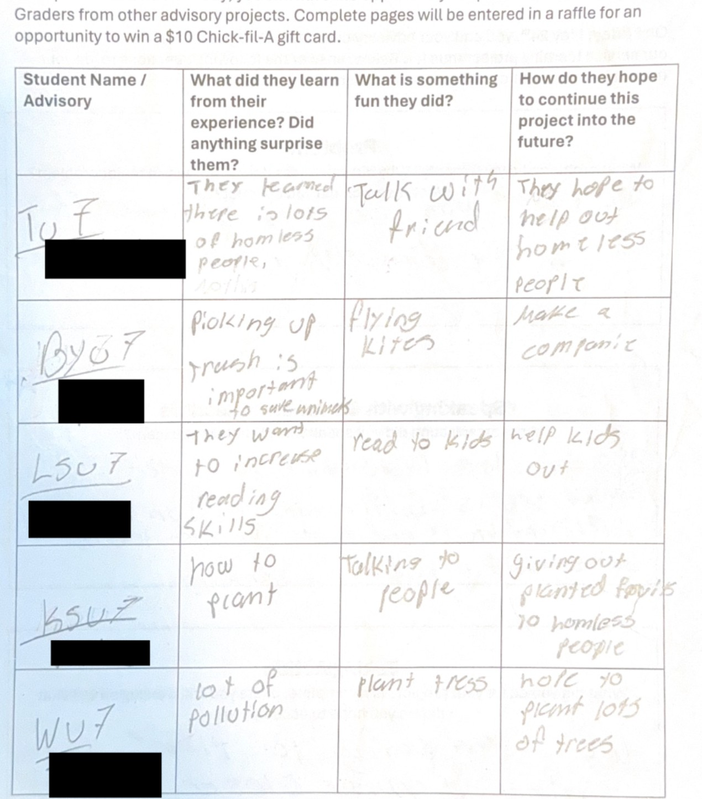
Student and Parent Testimonials
My experience talking to the board and planting trees to help the community was cool and was a good experience. Planting trees was a fun one because I was able to help my community and it was for free, too, so that's good. Talking to the board was nerve wracking because talking to people with the power to change the school in seconds was scary. I will never forget that experience. I was also thankful my teacher was able to give me these opportunities and let me be helpful and affect my community.
The opportunity with the Up With Trees program the kids got to experience was amazing. For them to be able to go out and help the community, with planting trees and learning about trees and learn the importance of trees was very informative for the students...As a parent, I knew the Up With Trees program would help the students practice teamwork...it also called for the students to use their critical thinking skills...It was a great learning experience, not just for the student but for the parents as well.
Volunteering with Up With Trees to plant trees was a rewarding experience. Our whole family joined in, and it gave us a deeper appreciation for trees and the people who care for them every day. By volunteering, we gained a true understanding of the hard work that goes into preserving our environment. Despite the heat and the tough labor, we're grateful for the opportunity to not only support our community but also help make the earth a better place for future generations.